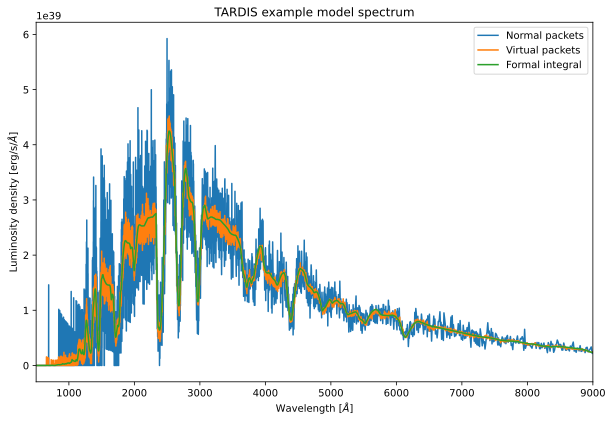

You can interact with this notebook online: Launch notebook
[1]:
from tardis.workflows.simple_simulation import SimpleSimulation
from tardis.io.configuration.config_reader import Configuration
[2]:
config = Configuration.from_yaml('../tardis_example.yml')
[3]:
workflow = SimpleSimulation(config)
[tardis.workflows.simple_simulation][INFO ]
Reading Atomic Data from ../kurucz_cd23_chianti_H_He.h5 (simple_simulation.py:149)
[tardis.io.atom_data.util][INFO ]
Atom Data kurucz_cd23_chianti_H_He.h5 not found in local path.
Exists in TARDIS Data repo /home/runner/Downloads/tardis-data/kurucz_cd23_chianti_H_He.h5 (util.py:36)
[tardis.io.atom_data.base][INFO ]
Reading Atom Data with: UUID = 6f7b09e887a311e7a06b246e96350010 MD5 = 864f1753714343c41f99cb065710cace (base.py:258)
[tardis.io.atom_data.base][INFO ]
Non provided Atomic Data: synpp_refs, photoionization_data, yg_data, two_photon_data, linelist (base.py:262)
[tardis.io.model.parse_density_configuration][WARNING]
Number of density points larger than number of shells. Assuming inner point irrelevant (parse_density_configuration.py:114)
[tardis.model.matter.decay][INFO ]
Decaying abundances for 1123200.0 seconds (decay.py:101)
[4]:
workflow.run()
[tardis.workflows.simple_simulation][INFO ]
Starting iteration 1 of 20 (simple_simulation.py:422)
[py.warnings ][WARNING]
/home/runner/work/tardis/tardis/tardis/transport/montecarlo/montecarlo_main_loop.py:123: NumbaTypeSafetyWarning: unsafe cast from uint64 to int64. Precision may be lost.
vpacket_collection = vpacket_collections[i]
(warnings.py:112)
[tardis.workflows.simple_simulation][INFO ]
Starting iteration 2 of 20 (simple_simulation.py:422)
[tardis.workflows.simple_simulation][INFO ]
Iteration converged 1/4 consecutive times. (simple_simulation.py:247)
[tardis.workflows.simple_simulation][INFO ]
Starting iteration 3 of 20 (simple_simulation.py:422)
[tardis.workflows.simple_simulation][INFO ]
Iteration converged 2/4 consecutive times. (simple_simulation.py:247)
[tardis.workflows.simple_simulation][INFO ]
Starting iteration 4 of 20 (simple_simulation.py:422)
[tardis.workflows.simple_simulation][INFO ]
Iteration converged 3/4 consecutive times. (simple_simulation.py:247)
[tardis.workflows.simple_simulation][INFO ]
Starting iteration 5 of 20 (simple_simulation.py:422)
[tardis.workflows.simple_simulation][INFO ]
Iteration converged 4/4 consecutive times. (simple_simulation.py:247)
[tardis.workflows.simple_simulation][INFO ]
Starting iteration 6 of 20 (simple_simulation.py:422)
[tardis.workflows.simple_simulation][INFO ]
Iteration converged 5/4 consecutive times. (simple_simulation.py:247)
[tardis.workflows.simple_simulation][INFO ]
Starting iteration 7 of 20 (simple_simulation.py:422)
[tardis.workflows.simple_simulation][INFO ]
Iteration converged 6/4 consecutive times. (simple_simulation.py:247)
[tardis.workflows.simple_simulation][INFO ]
Starting iteration 8 of 20 (simple_simulation.py:422)
[tardis.workflows.simple_simulation][INFO ]
Iteration converged 7/4 consecutive times. (simple_simulation.py:247)
[tardis.workflows.simple_simulation][INFO ]
Starting iteration 9 of 20 (simple_simulation.py:422)
[tardis.workflows.simple_simulation][INFO ]
Iteration converged 8/4 consecutive times. (simple_simulation.py:247)
[tardis.workflows.simple_simulation][INFO ]
Starting iteration 10 of 20 (simple_simulation.py:422)
[tardis.workflows.simple_simulation][INFO ]
Iteration converged 9/4 consecutive times. (simple_simulation.py:247)
[tardis.workflows.simple_simulation][INFO ]
Starting iteration 11 of 20 (simple_simulation.py:422)
[tardis.workflows.simple_simulation][INFO ]
Iteration converged 10/4 consecutive times. (simple_simulation.py:247)
[tardis.workflows.simple_simulation][INFO ]
Starting iteration 12 of 20 (simple_simulation.py:422)
[tardis.workflows.simple_simulation][INFO ]
Iteration converged 11/4 consecutive times. (simple_simulation.py:247)
[tardis.workflows.simple_simulation][INFO ]
Starting iteration 13 of 20 (simple_simulation.py:422)
[tardis.workflows.simple_simulation][INFO ]
Iteration converged 12/4 consecutive times. (simple_simulation.py:247)
[tardis.workflows.simple_simulation][INFO ]
Starting iteration 14 of 20 (simple_simulation.py:422)
[tardis.workflows.simple_simulation][INFO ]
Iteration converged 13/4 consecutive times. (simple_simulation.py:247)
[tardis.workflows.simple_simulation][INFO ]
Starting iteration 15 of 20 (simple_simulation.py:422)
[tardis.workflows.simple_simulation][INFO ]
Iteration converged 14/4 consecutive times. (simple_simulation.py:247)
[tardis.workflows.simple_simulation][INFO ]
Starting iteration 16 of 20 (simple_simulation.py:422)
[tardis.workflows.simple_simulation][INFO ]
Iteration converged 15/4 consecutive times. (simple_simulation.py:247)
[tardis.workflows.simple_simulation][INFO ]
Starting iteration 17 of 20 (simple_simulation.py:422)
[tardis.workflows.simple_simulation][INFO ]
Iteration converged 16/4 consecutive times. (simple_simulation.py:247)
[tardis.workflows.simple_simulation][INFO ]
Starting iteration 18 of 20 (simple_simulation.py:422)
[tardis.workflows.simple_simulation][INFO ]
Iteration converged 17/4 consecutive times. (simple_simulation.py:247)
[tardis.workflows.simple_simulation][INFO ]
Starting iteration 19 of 20 (simple_simulation.py:422)
[tardis.workflows.simple_simulation][INFO ]
Iteration converged 18/4 consecutive times. (simple_simulation.py:247)
[tardis.workflows.simple_simulation][INFO ]
Starting final iteration (simple_simulation.py:445)
[5]:
import matplotlib.pyplot as plt
[6]:
spectrum = workflow.spectrum_solver.spectrum_real_packets
spectrum_virtual = workflow.spectrum_solver.spectrum_virtual_packets
spectrum_integrated = workflow.spectrum_solver.spectrum_integrated
[py.warnings ][WARNING]
/home/runner/work/tardis/tardis/tardis/spectrum/formal_integral.py:384: UserWarning: The number of interpolate_shells was not specified. The value was set to 80.
warnings.warn(
(warnings.py:112)
[7]:
%matplotlib inline
plt.figure(figsize=(10, 6.5))
spectrum.plot(label="Normal packets")
spectrum_virtual.plot(label="Virtual packets")
spectrum_integrated.plot(label='Formal integral')
plt.xlim(500, 9000)
plt.title("TARDIS example model spectrum")
plt.xlabel("Wavelength [$\AA$]")
plt.ylabel("Luminosity density [erg/s/$\AA$]")
plt.legend()
plt.show()
[py.warnings ][WARNING]
<>:10: SyntaxWarning: invalid escape sequence '\A'
(warnings.py:112)
[py.warnings ][WARNING]
<>:11: SyntaxWarning: invalid escape sequence '\A'
(warnings.py:112)
[py.warnings ][WARNING]
<>:10: SyntaxWarning: invalid escape sequence '\A'
(warnings.py:112)
[py.warnings ][WARNING]
<>:11: SyntaxWarning: invalid escape sequence '\A'
(warnings.py:112)
[py.warnings ][WARNING]
/tmp/ipykernel_5528/3606673508.py:10: SyntaxWarning: invalid escape sequence '\A'
plt.xlabel("Wavelength [$\AA$]")
(warnings.py:112)
[py.warnings ][WARNING]
/tmp/ipykernel_5528/3606673508.py:11: SyntaxWarning: invalid escape sequence '\A'
plt.ylabel("Luminosity density [erg/s/$\AA$]")
(warnings.py:112)

[ ]: